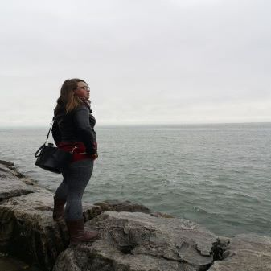

Meet the team that will help you change the world, one dataset at a time.

Carol Buckingham
Archaeology
Carol completed a Classics degree while specializing in Ancient Art and Archaeology at Brock University. She discovered her passion for GIS through its applications for mapping underwater archeological excavations. She has previously used her unique skillset in cultural resource management and joins our spatial analysis team with an aim to determine areas with high potential for future archeological digs.
Becca Carmichael
Environmental Geography
Becca holds a degree in Environmental Geography from Nipissing University, and has been a lifelong conservation enthusiast. She decided to study GIS to broaden and enhance her technical geographic knowledge with a goal of addressing human geography issues. She brings her skills and passion for clear communication to the cartography team!

Kira-Marie Lazda
Environmental and Agricultural Science
Kira-Marie pursued Environmental Science at McGill University, specializing in Biodiversity and Conservation. She was quickly drawn to complete a minor in GIS & Remote Sensing as she realized how many conservation issues could be addressed with that skillset. She joins our team as the head consultant for habitat and wildlife conservation projects, and thrives in the spatial analyst role.
Stephanie Scane
Environmental Studies and Forestry
Stephanie completed her degree in Environmental Studies with the goal of finding a career in conservation. The completion of her Master's in Forestry emphasized her passion for GIS and how it could bring her closer to leading meaningful conservation projects. After developing her skills and abilities, she joined our team as the head of the Forestry consultation sector, with a particular affinity for spatial analysis.